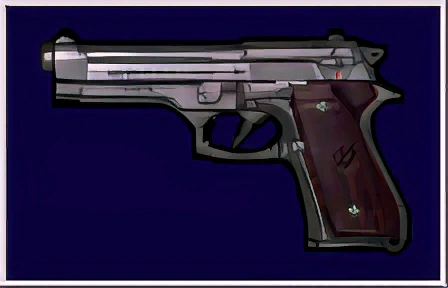

|
 |
|
| Información general | |
|---|---|
| Poder de fuego | Medio |
| Velocidad de fuego | Medio |
| Clase de arma | Pistola |
| Valor | 2.000 |
| Fuente: Resident Evil Wiki | |
Descripción
La Beretta 92FS es una pistola semi-automática que hace aparición en algunos juegos de la saga Resident Evil.
En Resident Evil: Director's Cut esta arma aparece únicamente en el modo avanzado reemplazando la Samurai Edge de Chris y Jill. Esta pistola tiene la capacidad de ejecutar disparos críticos al azar en los enemigos normales.
En Resident Evil 2 aparece como una de las armas de Chris Redfield en el minijuego Extreme Battle. A diferencia de la VP70 o la Browning HP, esta tiene la capacidad de ejecutar un disparo crítico al azar al disparar a enemigos normales como los zombis .
En Resident Evil 5 es el arma inicial de Chris y Sheva. También la usa Ricardo Irving en algunas escenas del juego, Josh Stone en la reunión de los mercenarios y Albert Wesker posee una versión personalizada denominada "Samurai Edge". También la usa Jill Valentine en el capítulo extra de Resident Evil 5 "Perdido en un mar de pesadillas", durante su incursión con Chris en la mansión Spencer. Al mejorar al máximo esta pistola se desbloquea la M93 R.
Se puede mejorar la capacidad del arma para que albergue un número altísimo de balas (al contrario que el arma real, que está limitada a unas 15 balas por cargador). ¡Cada cargador puede contener la friolera de 100 balas!. Ésta es una característica que comparten las otras armas iniciales de cada tipo (la ametralladora VZ61, la escopeta Ithaca M37 y el rifle S75). Todas llegan a superar la capacidad que poseen en la vida real.